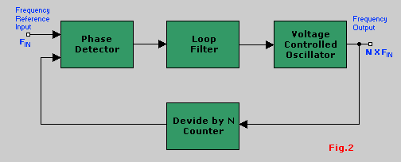
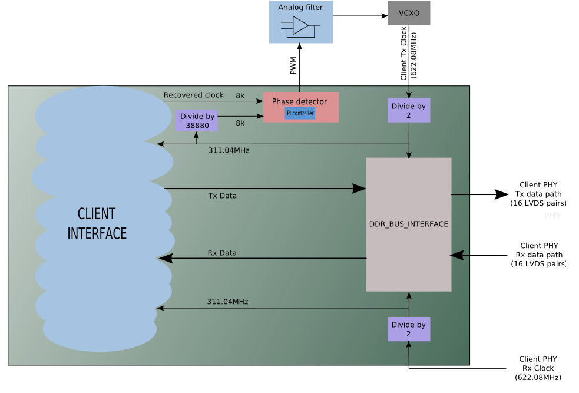

Phase-locked loops, ou simplesmente PLL, é um sistema de controle de freqüência em loop, baseado na diferença de phase entre uma referência de entrada e a saída de um oscilador controlado. A figura abaixo mostra o diagrama de blocos de um PLL.

Na placa X10GIGA um PLL é utilizado para realizar a recuperação do relógio da rede. A referência de entrada é obtida a partir dos dados recebidos e comparada à saída do oscilador controlado por tensão. A diferença de fase entre ambas é aplicada a um controlador PI que gera uma saída PWM para controle do oscilador. Caso o relógio recuperado dos dados esteja numa freqüência diferente do relógio do oscilador o PWM atuará sobre o VCXO fazendo com que sua freqüência torne-se igual àquela recuperada da rede. Trata-se de um PLL por excelência, com a peculiaridade de que parte do circuito é implementado na forma digital dentro do FPGA. O diagrama abaixo exemplifica o funcionamento do sistema:
